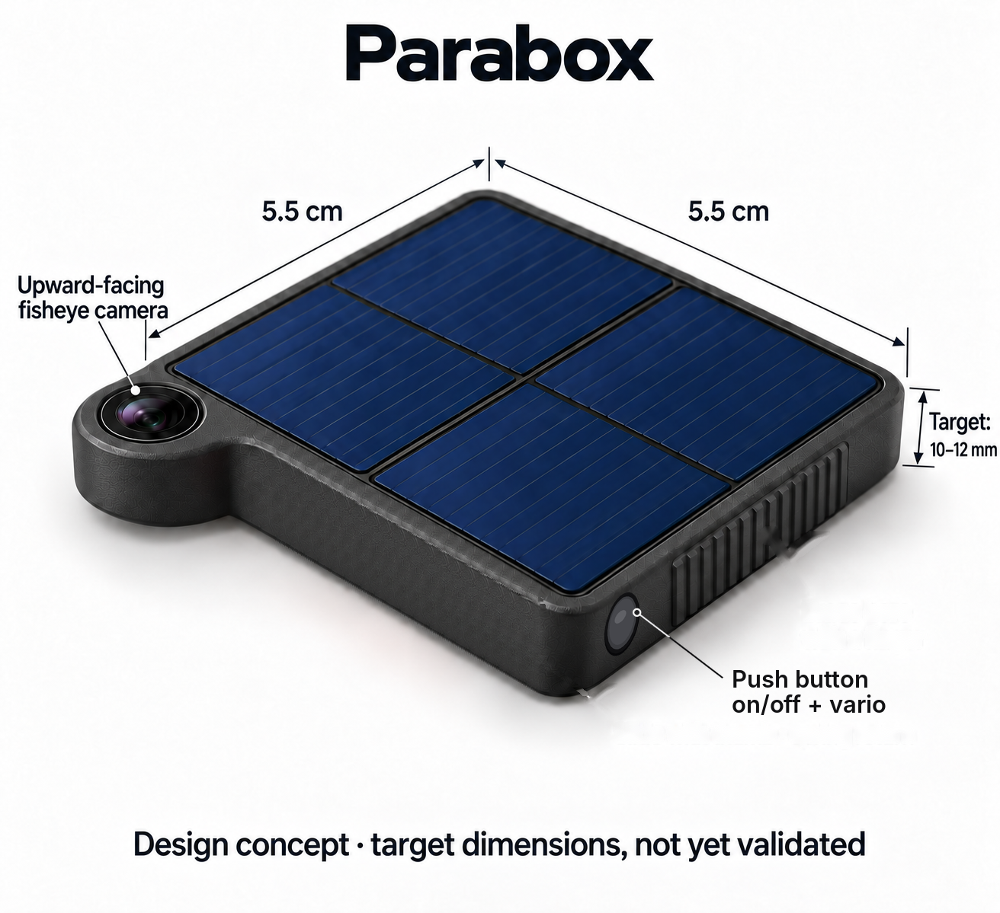

Parabox · Flugschreiber für GleitschirmeParabox · A flight recorder for paraglidersParabox · Un enregistreur de vol pour le parapente
Das Solar-Vario mit Video-Flugschreiber.The solar vario with a video flight recorder.Le vario solaire avec enregistreur de vol vidéo.
Steigton, GPS-Log und Bilder vom Schirm, ohne Laden. Automatisch aufzeichnen. Flüge verstehen. Gemeinsam lernen. Eine Produktidee für Gleitschirm- und Speedflying-Piloten.Climb tone, GPS log and images of the canopy, no charging. Record automatically. Understand flights. Learn together. A product concept for paragliding and speedflying pilots.Son de montée, trace GPS et images de la voile, sans recharge. Enregistrer automatiquement. Comprendre ses vols. Apprendre ensemble. Un concept pour les pilotes de parapente et de speedflying.
Aus Flügen lernen, auch wenn etwas schiefgeht.Learn from flights, including when things go wrong.Apprendre de ses vols, même quand tout ne se passe pas comme prévu.
Unfälle zeigen, wie wichtig es ist, aus Ereignissen zu lernen. Berichte von Piloten sind wertvoll, doch Bilder und Messdaten fehlen oft. Parabox soll festhalten, was sonst verloren geht: den Ablauf einer Störung, die Reaktion des Piloten und den Verlauf des Fluges. Das Ziel ist, Training und Entscheidungen zu verbessern und langfristig zur Unfallprävention beizutragen.Accidents underline the need to learn from events. Pilot reports are valuable, but images and measurements are often missing. Parabox aims to preserve what would otherwise be lost: how an incident unfolded, how the pilot reacted and how the flight developed. The goal is to improve training and decisions and, over time, contribute to accident prevention.Les accidents rappellent l’importance de tirer les leçons des événements. Les récits des pilotes sont précieux, mais images et mesures manquent souvent. Parabox veut conserver ce qui serait autrement perdu : le déroulement d’un incident, la réaction du pilote et l’évolution du vol. L’objectif est d’améliorer la formation et les décisions et, à terme, de contribuer à la prévention des accidents.
Jedes Jahr verunglücken in der Schweiz sechs bis siebzehn Gleitschirm-, Delta- und Speedflying-Piloten tödlich. Keiner dieser Unfälle ist mit Bild- und Flugdaten dokumentiert. Parabox liefert, was heute fehlt: zehn Bilder pro Sekunde von Kappe und Händen, Fluglage hundertmal pro Sekunde, Höhe und Position, alles auf einer gemeinsamen Zeitachse und in dokumentiertem Format.Every year there are six to seventeen fatal paragliding, hang gliding and speedflying accidents in Switzerland. None of these accidents is documented with images and flight data. Parabox provides what is missing today: ten images per second of canopy and hands, attitude a hundred times per second, altitude and position, all on one shared time base and in a documented format.Chaque année, la Suisse compte six à dix-sept accidents mortels de parapente, de delta et de speedflying. Aucun de ces accidents n’est documenté par des images et des données de vol. Parabox apporte ce qui manque aujourd’hui : dix images par seconde de la voile et des mains, l’attitude cent fois par seconde, l’altitude et la position, le tout sur une base de temps commune et dans un format documenté.
Tödliche Unfälle: Luftfahrtbereiche im VergleichFatal accidents: aviation sectors comparedAccidents mortels : secteurs aéronautiques comparés
| JahrYearAnnée | Gleitschirm, Delta und Speedflying¹Paragliding, hang gliding and speedflying¹Parapente, delta et speedflying¹ | Übrige Luftfahrt²Other aviation²Autre aviation² | Linienflüge³Airline flights³Vols de ligne³ |
|---|---|---|---|
| 2019 | 7 | 7 | 0 |
| 2020 | 10 | 4 | 0 |
| 2021 | 9 | 5 | 0 |
| 2022 | 8 | 6 | 0 |
| 2023 | 10 | 2 | 0 |
| 2024 | 6 | 3 | 1 |
| 2025 | 17 | 5 | 0 |
¹ Tödliche Unfälle nach den Unfallanalysen des SHV (Swiss Glider), Schweizer Pilotinnen und Piloten, je nach Jahr mit Unfällen im Ausland oder ausländischer Gäste; 2025: 13 Gleitschirm, 2 Speedflying, 2 Delta. ² Tödliche Unfälle, die die SUST untersucht hat (Motorflugzeuge, Helikopter, Segelflugzeuge, Ballone, Ecolight), nach SUST-Angaben via Keystone-SDA; 2025 nach dem Sicherheitsbericht des BAZL (vier in der Leichtaviatik, einer bei Helikopterarbeit). ³ Linienflüge Schweizer Fluggesellschaften; 2024: Notlandung eines Swiss-Airbus in Graz nach Rauchentwicklung, ein Flugbegleiter starb an den Folgen. Unfälle, nicht Todesopfer; die Erfassung ist je Spalte anders, ein direkter Risikovergleich ist nicht möglich.¹ Fatal accidents according to the SHV accident analyses (Swiss Glider), Swiss pilots, depending on the year including accidents abroad or foreign guests; 2025: 13 paragliding, 2 speedflying, 2 hang gliding. ² Fatal accidents investigated by the Swiss Transportation Safety Investigation Board (aeroplanes, helicopters, gliders, balloons, ecolight), as reported by Keystone-SDA; 2025 from the FOCA safety report (four in light aviation, one in helicopter work). ³ Scheduled flights of Swiss airlines; 2024: emergency landing of a Swiss Airbus in Graz after smoke on board, one flight attendant later died. Accidents, not fatalities; each column is counted differently, so no direct risk comparison is possible.¹ Accidents mortels selon les analyses d’accidents de la FSVL (Swiss Glider), pilotes suisses, selon l’année avec les accidents à l’étranger ou de visiteurs étrangers ; 2025 : 13 parapente, 2 speedflying, 2 delta. ² Accidents mortels enquêtés par le Service suisse d’enquête de sécurité (avions, hélicoptères, planeurs, ballons, ecolight), selon les chiffres du SESE relayés par Keystone-ATS ; 2025 selon le rapport de sécurité de l’OFAC (quatre en aviation légère, un en travail aérien par hélicoptère). ³ Vols de ligne des compagnies suisses ; 2024 : atterrissage d’urgence d’un Airbus de Swiss à Graz après un dégagement de fumée, un membre d’équipage de cabine est décédé des suites. Accidents, non victimes ; chaque colonne est recensée différemment, aucune comparaison directe du risque n’est possible.
Piloten fliegen. Parabox zeichnet auf.Pilots fly. Parabox records.Les pilotes volent. Parabox enregistre.
Eine nach oben gerichtete Fisheye-Kamera erfasst Kappe und Hände; GPS und Barometer ergänzen die Bilder. Das Blackbox-Prinzip: Die Aufzeichnung läuft automatisch im Hintergrund; bedient wird die Box wie ein klassisches Vario, mit einer einzigen Drucktaste. Solarversorgung und Akku sollen routinemässiges Laden vermeiden. Die Box ist zugleich ein vollwertiges Solar-Vario mit Ton und ein GPS-Logger: Steigton mit sofortiger Reaktion über den Lagesensor, Flugspur als IGC-Datei, kein Laden. Für Schüler kann sie das erste Instrument sein, für Streckenpiloten das Zweitgerät, das immer dabei ist. Der Speicher hält mehrere Flüge vor; ist er voll, wird das älteste Material überschrieben.An upward-facing fisheye camera captures the canopy and hands; GPS and barometric measurements complement the images. The black-box principle: recording runs automatically in the background; the box is operated like a classic vario, with a single push button. Solar power and a battery are intended to avoid routine charging. The box is also a fully fledged solar vario with sound and a GPS logger: instant-response climb tone via the motion sensor, flight track as an IGC file, no charging. For students it can be the first instrument, for cross-country pilots the second device that is always on board. Storage holds several flights, overwriting the oldest material when full.Une caméra fisheye orientée vers le haut filme la voile et les mains ; le GPS et le baromètre complètent les images. Le principe de la boîte noire : l’enregistrement tourne automatiquement en arrière-plan ; le boîtier se commande comme un vario classique, par un seul bouton-poussoir. L’alimentation solaire et la batterie doivent éviter les recharges habituelles. Le boîtier est aussi un vario solaire sonore à part entière et un enregistreur GPS : son de montée à réponse immédiate grâce au capteur de mouvement, trace au format IGC, sans recharge. Pour les élèves, il peut être le premier instrument ; pour les pilotes de distance, le second appareil toujours à bord. La mémoire conserve plusieurs vols puis remplace les enregistrements les plus anciens.
Piloten wissen selbst, wo und wann sie ein Problem hatten, und finden die Stelle nach dem Flug im Fluglog. Zusätzlich markiert die Software aus den Barometerdaten automatisch auffällige Abschnitte. Bilder und Flugdaten werden synchron angezeigt, ohne dass Piloten Aufnahmen und Messwerte selbst zusammenführen müssen. Kamerablick, Energieversorgung und zuverlässiger Betrieb sind mit Prototypen zu erproben.Pilots know where and when they had a problem and find the moment in the flight log after the flight. In addition, the software automatically marks unusual sections from the barometric data. Images and flight data are displayed in sync, without pilots having to align recordings and measurements themselves. Camera coverage, power supply and reliable operation need to be tested with prototypes.Les pilotes savent où et quand ils ont eu un problème et retrouvent le moment dans la trace après le vol. En complément, le logiciel marque automatiquement les passages inhabituels à partir des données barométriques. Images et données s’affichent de manière synchronisée, sans devoir les recaler soi-même. Le champ de vision, l’alimentation et la fiabilité doivent être vérifiés sur des prototypes.
Piloten entscheiden selbst, welche Ausschnitte sie teilen.Pilots decide which clips they share.Les pilotes choisissent eux-mêmes les extraits à partager.
So funktioniert ParaboxHow Parabox worksComment fonctionne Parabox
- 1Fisheye-KameraFisheye cameraCaméra fisheye
- 2SolarzellenSolar cellsCellules solaires
- 3Drucktaste (Ein/Aus und Vario)Push button (on/off and vario)Bouton-poussoir (marche/arrêt et vario)
Technik, Komponenten und Watt-BudgetTechnology, components and power budgetTechnique, composants et bilan énergétique
Installieren und vergessen ist das Entwicklungsziel. Dafür werden Kamera, Rechner, Speicher, Firmware und Solarversorgung gemeinsam auf niedrigen Verbrauch ausgelegt. Die Angaben beschreiben einen technischen Entwurf; Bauteilauswahl und Energiebilanz werden im ersten Meilenstein überprüft.Install and forget is the development goal. Camera, processor, storage, firmware and solar power will be designed together for low consumption. These specifications describe a technical concept; component selection and the energy balance will be verified in the first milestone.Installer et oublier : tel est l’objectif. Caméra, processeur, mémoire, logiciel embarqué et alimentation solaire seront conçus ensemble pour limiter la consommation. Ces indications décrivent un projet technique ; le choix des composants et le bilan énergétique seront vérifiés lors du premier jalon.
| BausteinComponentÉlément | AuslegungDesign approachConception envisagée |
|---|---|
| KameraCameraCaméra | Nach oben gerichtete Fisheye-Kamera mit rund 185° in Flugrichtung: vorn der Pilot mit Händen, Bremsen und Tragegurten, dahinter der Horizont; die Kappe steht in jeder Fluglage im Bild, ihre Schräglage misst der Lagesensor. Das Objektiv steht über das Gehäuse hinaus und sieht frei bis zum Horizont. Bildsensor OmniVision OV9782 in Farbe (1/4 Zoll, Global Shutter, 1280 × 800 Pixel); die Vortests bestätigen seinen Verbrauch im Einzelbildbetrieb. Jedes Bild wird einzeln ausgelöst, dazwischen schläft der Sensor. Dazu ein Fisheye-Objektiv ab Katalog für das 1/4-Zoll-Format, 185 bis 200°, Glas, M12-Gewinde. Aufgezeichnet wird durchgehend mit 10 Bildern pro Sekunde, in tiefer Auflösung; höhere Auflösung, sobald der Akku es erlaubt.Upward-facing fisheye camera with about 185° along the direction of flight: the pilot with hands, brakes and risers in front, the horizon behind; the canopy is in the frame in every attitude, and its bank angle is measured by the motion sensor. The lens protrudes above the housing and sees freely to the horizon. Image sensor OmniVision OV9782 in colour (1/4 inch, global shutter, 1280 × 800 pixels); the preliminary tests confirm its consumption in single-frame operation. Each frame is triggered individually, with the sensor sleeping in between. Plus an off-the-shelf fisheye lens for the 1/4-inch format, 185 to 200°, glass, M12 thread. Recording runs continuously at 10 frames per second, in low resolution; higher resolution whenever the battery allows.Caméra fisheye orientée vers le haut, environ 185° dans le sens du vol : à l’avant le pilote avec ses mains, ses freins et ses élévateurs, l’horizon derrière ; la voile reste dans l’image quelle que soit l’attitude, et son inclinaison est mesurée par le capteur de mouvement. L’objectif dépasse du boîtier et voit librement jusqu’à l’horizon. Capteur d’image OmniVision OV9782 en couleur (1/4 pouce, obturateur global, 1280 × 800 pixels) ; les essais préliminaires confirment sa consommation en prise d’images individuelles. Chaque image est déclenchée individuellement, le capteur dormant entre deux. Avec un objectif fisheye de catalogue pour le format 1/4 pouce, 185 à 200°, verre, filetage M12. L’enregistrement est continu, à 10 images par seconde, en basse résolution ; résolution plus élevée dès que la batterie le permet. |
| RechnerProcessorProcesseur | Stromsparender Mikrocontroller STM32U5 mit eigenem Kameraeingang. Er löst die Bilder aus, komprimiert sie (die Farbberechnung übernimmt erst der Server), schreibt sie in den Speicher, liest GNSS, Barometer und Lagesensor, erzeugt den Vario-Ton und meldet sich am Computer als Laufwerk; Takt und Ruhephasen passend zur Aufzeichnung.Low-power STM32U5 microcontroller with its own camera input. It triggers the frames, compresses them (colour processing is left to the server), writes them to storage, reads GNSS, barometer and motion sensor, generates the vario sound and shows up on the computer as a drive; clock speed and idle periods matched to recording.Microcontrôleur basse consommation STM32U5 avec entrée caméra intégrée. Il déclenche les images, les compresse (le traitement couleur est laissé au serveur), les écrit en mémoire, lit le GNSS, le baromètre et le capteur de mouvement, génère le son du vario et se présente à l’ordinateur comme un lecteur ; fréquence et phases de repos adaptées à l’enregistrement. |
| SpeicherStorageMémoire | Fest verbauter SD-NAND-Speicher, 32 GB, kein Kartenschacht. Ringspeicher; der älteste Flug fällt weg. Bei 10 Bildern pro Sekunde in tiefer Auflösung bleiben die letzten rund 30 Flugstunden auf der Box; die genauen Werte folgen aus den Vortests. Gepufferte Blockschreibvorgänge; Schreib- und Ruheenergie werden gemessen.Built-in SD-NAND storage, 32 GB, no card slot. Loop recording; the oldest flight drops out. At 10 frames per second in low resolution the box keeps the last 30 or so flight hours; exact figures follow from the preliminary tests. Buffered block writes; write and idle energy will be measured.Mémoire SD-NAND intégrée, 32 Go, sans fente pour carte. Enregistrement en boucle ; le vol le plus ancien est effacé. À 10 images par seconde en basse résolution, le boîtier conserve les quelque 30 dernières heures de vol ; les valeurs exactes découleront des essais préliminaires. Écriture par blocs avec mémoire tampon ; énergie d’écriture et de repos à mesurer. |
| FlugdatenFlight dataDonnées de vol | Energieoptimiertes GNSS-Modul, u-blox MAX-M10S im Stromsparmodus; eine Position pro Sekunde. Barometer mit angestrebten 20 Messungen/s. Lagesensor (Trägheitssensor: Beschleunigung und Drehrate) mit 100 Messungen/s: Nick- und Rollwinkel und G-Kräfte für die Störungsanalyse und ein Vario mit sofortiger Reaktion, der Steigton spricht ohne Verzögerung an, das Barometer liefert die Höhe. Gemeinsame Zeitbasis für Bilder und Messdaten, Flugspur als IGC-Datei.Energy-efficient GNSS module, u-blox MAX-M10S in power-save mode; one position per second. Barometer targeting 20 readings/s. Motion sensor (inertial sensor: acceleration and rotation rate) at 100 readings/s: pitch and roll angles and g-forces for incident analysis, and an instant-response vario, the climb tone responds without delay, the barometer provides the altitude. Shared time base for images and measurements; flight track as an IGC file.Module GNSS économe, u-blox MAX-M10S en mode économie d’énergie ; une position par seconde. Baromètre visant 20 mesures/s. Capteur de mouvement (centrale inertielle : accélération et vitesse angulaire) à 100 mesures/s : angles de tangage et de roulis et facteurs de charge pour l’analyse des incidents, et un vario à réponse immédiate, le son de montée réagit sans délai, le baromètre fournit l’altitude. Base de temps commune pour les images et les mesures ; trace au format IGC. |
| Energie und BedienungPower and controlsAlimentation et commande | Ca. 25 cm² hochwertige Solarzellen; flacher Lithium-Polymer-Akku, 700 mAh (2,6 Wh). Effiziente Solar-Ladeelektronik mit Temperaturüberwachung; der Computer lädt die Box zusätzlich bei jeder Übertragung. Bedienung wie bei einem klassischen Vario: Eine Drucktaste an der Seite (5 mm, bündig) schaltet das Vario (Piezo-Tongeber) und ist zugleich der Ein-/Aus-Schalter der Box. Sparsamer Ruhezustand ausserhalb des Flugs; ist der Ruheverbrauch klein genug, erprobt die Firmware in der Entwicklungsphase zusätzlich ein automatisches Ein- und Ausschalten der Kamera. USB-C. Keine Funkübertragung in Betrieb; auf jeder Platine ist Platz für ein Bluetooth-Modul, bestückt als Option, später per Firmware freischaltbar. Vorbereitet, noch nicht bestückt: zwei Anschlusspole für einen Temperaturfühler (Thermistor), der nur zu einzelnen Zeitpunkten ausgelesen wird.Approx. 25 cm² of high-grade solar cells; flat lithium-polymer battery, 700 mAh (2.6 Wh). Efficient solar charging with temperature monitoring; the computer also charges the box at every transfer. Operated like a classic vario: a push button on the side (5 mm, flush) switches the vario (piezo sounder) and is at the same time the on/off switch of the box. Low-power standby outside flight; if the standby consumption is low enough, the firmware will also trial automatic switching of the camera on and off during the development phase. USB-C. No wireless transmission in operation; every board has a footprint for a Bluetooth module, fitted as an option and enabled later by firmware. Prepared, not yet fitted: two terminals for a temperature sensor (thermistor) that is read only at individual moments.Environ 25 cm² de cellules solaires de qualité ; batterie plate lithium-polymère, 700 mAh (2,6 Wh). Charge solaire efficace avec surveillance de température ; l’ordinateur recharge aussi le boîtier à chaque transfert. Commande comme sur un vario classique : un bouton-poussoir sur le côté (5 mm, affleurant) commande le vario (buzzer piézo) et sert en même temps d’interrupteur marche/arrêt du boîtier. Veille économe hors vol ; si la consommation au repos est assez faible, le logiciel embarqué testera aussi, en phase de développement, une mise en marche et un arrêt automatiques de la caméra. USB-C. Aucune transmission sans fil en service ; chaque carte prévoit l’emplacement d’un module Bluetooth, monté en option et activable plus tard par le logiciel embarqué. Préparé, pas encore monté : deux bornes pour un capteur de température (thermistance), lu seulement à des instants ponctuels. |
| ÜbertragungTransferTransfert | Nach dem Flug kommt die Box per USB-C an den Computer. Im Browser wählt der Pilot die Stellen, die er kennt, und die automatisch aus den Barometerdaten vorgeschlagenen. Auf die Plattform gehen nur diese Ausschnitte: die Spur als IGC-Datei, Start und Landung mit je 2,5 Minuten Bildern und zu jeder gewählten Stelle die 3 Minuten davor; dort sieht er die Auswertung, Bilder und Flugdaten synchron. Die letzten rund 30 Flugstunden bleiben auf der Box; weitere Ausschnitte lassen sich nachholen. Keine App.After the flight the box goes on USB-C to the computer. In the browser the pilot chooses the moments he knows and those suggested automatically from the barometric data. Only these sections go to the platform: the track as an IGC file, launch and landing with 2.5 minutes of images each, and for every chosen moment the 3 minutes before it; there he sees the review, images and flight data in sync. The last 30 or so flight hours stay on the box; further sections can be fetched later. No app.Après le vol, le boîtier se connecte à l’ordinateur par USB-C. Dans le navigateur, le pilote choisit les moments qu’il connaît et ceux proposés automatiquement à partir des données barométriques. Seuls ces extraits partent vers la plateforme : la trace en IGC, le décollage et l’atterrissage avec 2,5 minutes d’images chacun, et pour chaque moment choisi les 3 minutes précédentes ; il y voit l’analyse, images et données de vol synchronisées. Les quelque 30 dernières heures de vol restent sur le boîtier ; d’autres extraits peuvent être récupérés ensuite. Pas d’application. |
| GehäusezielHousing targetObjectif de boîtier | Ca. 5,5 × 5,5 cm, 10–12 mm Grundhöhe zuzüglich Objektiv (10–17 mm); ca. 90 g inkl. Akku. Endgültige Abmessungen und Akkugrösse folgen aus dem Energienachweis.Approx. 5.5 × 5.5 cm, 10–12 mm base height plus lens (10–17 mm); approx. 90 g including battery. Final dimensions and battery size depend on energy validation.Environ 5,5 × 5,5 cm, hauteur de base de 10–12 mm hors objectif (10–17 mm) ; env. 90 g, batterie comprise. Les dimensions définitives et la batterie dépendront de la validation énergétique. |
Verbrauch: Planungswert rund 60 mWPower consumption: planning value around 60 mWConsommation : valeur de travail d’environ 60 mW
Engineering-Schätzung für eine energieoptimierte Platine bei durchgehend 10 Bildern/s, GNSS und Druck, ohne Funk; Vario-Ton nur beim Steigen. Die Werte sind mittlere Leistungen, keine Messwerte oder garantierten Grenzen. Schreib- und Einschaltspitzen werden separat ausgelegt.Engineering estimate for an energy-efficient board recording continuously at 10 frames/s, with GNSS and pressure sensing, without wireless transmission; vario sound only while climbing. Figures are average power estimates, not measurements or guaranteed limits. Write and startup peaks will be addressed separately.Estimation d’ingénierie pour une carte optimisée en enregistrement continu à 10 images/s, avec GNSS et pression, sans transmission radio ; son du vario uniquement en montée. Il s’agit de puissances moyennes estimées, non de mesures ou de limites garanties. Les pointes d’écriture et de démarrage seront traitées séparément.
| TeilComponentComposant | Geschätzte mittlere LeistungEstimated average powerPuissance moyenne estimée |
|---|---|
| Bildsensor OV9782 (640 × 400, 10 Bilder/s, schläft zwischen den Bildern)Image sensor OV9782 (640 × 400, 10 frames/s, sleeping between frames)Capteur d’image OV9782 (640 × 400, 10 images/s, en veille entre les images) | 10–20 mW10–20 mW10–20 mW |
| Mikrocontroller, Bildübernahme und KompressionMicrocontroller, image capture and compressionMicrocontrôleur, acquisition et compression | 8–15 mW8–15 mW8–15 mW |
| GNSS, Stromsparmodus bis DauerbetriebGNSS, power-save to continuous modeGNSS, mode économie à mode continu | 15–30 mW15–30 mW15–30 mW |
| Speicher, Schreiben und BereitschaftStorage, writes and idleMémoire, écriture et repos | 3–6 mW3–6 mW3–6 mW |
| Barometer, Lagesensor und KleinfunktionenBarometer, motion sensor and auxiliary functionsBaromètre, capteur de mouvement et fonctions auxiliaires | 2–3 mW2–3 mW2–3 mW |
| Vario-Ton, nur beim SteigenVario sound, only while climbingSon du vario, uniquement en montée | 2–6 mW2–6 mW2–6 mW |
| Spannungswandlung und VersorgungVoltage conversion and power managementConversion de tension et alimentation | 3–6 mW3–6 mW3–6 mW |
| Gesamt, gerundetTotal, roundedTotal arrondi | 45–85 mW45–85 mW45–85 mW |
Arbeitswert: 60 mW ab Akku; vorläufiger Auslegungswert mit Reserve: 75 mW. Im Flug liefern 25 cm² Solarzelle an sonnigen Tagen 70–140 mW, das Ein- bis Zweifache des Verbrauchs; der 700-mAh-Akku trägt die Box ohne Sonne 35 bis 43 Stunden. GNSS und Bildsensor sind die grössten Posten, der Rechner der dritte, weil er bei durchgehender Aufzeichnung nicht schlafen kann. Aufgezeichnet wird durchgehend: Eine Bildrate, die erst bei Barometer-Unruhe steigt, wurde an 45’839 Flügen aus dem Wallis geprüft und verworfen, denn jede vierte Störung beginnt in Luft, die das Barometer bis zwei Sekunden davor ruhig fand.Working estimate: 60 mW drawn from the battery; provisional design allowance: 75 mW. In flight, 25 cm² of solar cells deliver 70–140 mW on sunny days, one to two times the consumption; the 700 mAh battery carries the box for 35 to 43 hours without sun. GNSS and the image sensor are the largest items, the processor the third, because it cannot sleep during continuous recording. Recording is continuous: a frame rate that rises only on barometric unrest was tested on 45,839 flights from the Valais and rejected, because every fourth incident begins in air the barometer found calm up to two seconds before.Valeur de travail : 60 mW prélevés sur la batterie ; valeur provisoire de dimensionnement avec marge : 75 mW. En vol, 25 cm² de cellules solaires fournissent 70–140 mW par temps ensoleillé, soit une à deux fois la consommation ; la batterie de 700 mAh alimente le boîtier 35 à 43 heures sans soleil. Le GNSS et le capteur d’image sont les postes principaux, le processeur le troisième, car il ne peut pas se mettre en veille pendant un enregistrement continu. L’enregistrement est continu : une cadence qui n’augmente qu’en cas d’agitation barométrique a été testée sur 45 839 vols du Valais et écartée, car un incident sur quatre commence dans un air que le baromètre jugeait calme jusqu’à deux secondes avant.
Datenblatt-Anhaltspunkte: Der OV9782 nennt 156 mW im Betrieb (bei seinen maximalen 120 Bildern/s, also 1,3 mJ pro Bild) und 150 µA im Standby; bei 10 einzeln ausgelösten Bildern pro Sekunde mit Schlaf dazwischen ergibt das 10–20 mW, wie Messungen an Bildsensoren (MobiSys 2013) nahelegen; der MAX-M10S 25 mW im Dauerbetrieb und rund 15 mW im Stromsparmodus bei 1,8 V. Die Tabelle ist daraus abgeleitete Projektplanung, keine Herstellerspezifikation des Gesamtsystems.Datasheet reference points: the OV9782 specifies 156 mW active (at its maximum 120 frames/s, i.e. 1.3 mJ per frame) and 150 µA in standby; at 10 individually triggered frames per second with sleep in between this gives 10–20 mW, as measurements on image sensors (MobiSys 2013) suggest; the MAX-M10S 25 mW in continuous mode and about 15 mW in power-save mode at 1.8 V. The table is a project planning estimate informed by these references, not a manufacturer specification for the complete system.Repères issus des fiches techniques : le OV9782 indique 156 mW en fonctionnement (à ses 120 images/s maximales, soit 1,3 mJ par image) et 150 µA en veille ; à 10 images par seconde déclenchées individuellement avec veille entre deux, cela donne 10–20 mW, comme le suggèrent des mesures sur capteurs d’image (MobiSys 2013) ; le MAX-M10S 25 mW en mode continu et environ 15 mW en mode économie à 1,8 V. Le tableau constitue une estimation de projet éclairée par ces références, et non une spécification fabricant du système complet.
Erster Meilenstein: Energie- und AufzeichnungsnachweisFirst milestone: energy and recording validationPremier jalon : validation énergétique et de l’enregistrement
Zunächst wird der Bildsensor in Vortests geprüft und die Aufzeichnung auf einem Entwicklerboard erprobt, danach der Verbrauch mit einer energieoptimierten Testschaltung oder eigenen Platine. Nachzuweisen sind nutzbare, synchronisierte Bilder und Flugdaten sowie eine gemessene Energiebilanz aus Verbrauch, Solarertrag und Akkureserve. Flugprofil, Lichtbedingungen und Abnahmekriterien werden vor Beginn vereinbart. Erst auf dieser Grundlage werden Vorserie und endgültige Bauform festgelegt.The image sensor will first be checked in preliminary tests and recording tried on a development board, followed by power measurements on an energy-efficient test circuit or custom board. Required evidence comprises usable, synchronised images and flight data, plus a measured energy balance covering consumption, solar yield and battery reserve. Flight profiles, lighting conditions and acceptance criteria will be agreed before work begins. Pre-production and the final form factor will be defined on that basis.Le capteur d’image sera d’abord vérifié lors d’essais préliminaires et l’enregistrement testé sur une carte de développement, puis la consommation sur un circuit d’essai économe ou une carte dédiée. Il faudra démontrer la disponibilité d’images et de données de vol exploitables et synchronisées, ainsi qu’un bilan mesuré entre consommation, apport solaire et réserve de batterie. Profils de vol, conditions lumineuses et critères d’acceptation seront convenus avant les travaux. La présérie et la forme définitive seront définies sur cette base.
Für «installieren und vergessen» muss der Solarertrag über das vereinbarte Nutzungsprofil den Verbrauch decken; der Akku überbrückt Zeiten mit wenig Sonne. Abschattung am Gurtzeug und Lagerung im Packsack gehören zur Prüfung. Ein grösserer Akku erhöht die Reserve, ersetzt aber keine ausgeglichene Energiebilanz.For “install and forget”, solar yield must cover consumption over the agreed usage profile; the battery bridges periods of low sunlight. Harness shading and storage inside a packed harness are part of the assessment. A larger battery increases the reserve but cannot replace a balanced energy budget.Pour « installer et oublier », l’apport solaire doit couvrir la consommation sur le profil d’utilisation convenu ; la batterie compense les périodes peu ensoleillées. L’ombre de la sellette et le rangement dans le sac font partie des essais. Une batterie plus grande augmente la réserve, mais ne remplace pas un bilan énergétique équilibré.
Der Weg: Gesuch, Erprobung 2028, SerieThe plan: application, 2028 trial, seriesLe plan : demande, essais 2028, série
Für die Entwicklung und eine Erprobung in der Schweiz wird im November 2026 ein Gesuch an die Spezialfinanzierung Luftverkehr des Bundes eingereicht; der Entscheid wird für den Sommer 2027 erwartet. Die Elektronik entwickelt und fertigt eine Schweizer Firma; die Auswertungssoftware baue ich selbst.For development and a trial in Switzerland, an application to the federal Special Financing for Air Transport will be submitted in November 2026; the decision is expected in summer 2027. A Swiss company develops and manufactures the electronics; I build the review software myself.Pour le développement et une expérimentation en Suisse, une demande au Financement spécial du trafic aérien de la Confédération sera déposée en novembre 2026 ; la décision est attendue pour l’été 2027. Une entreprise suisse développe et fabrique l’électronique ; je construis moi-même le logiciel d’analyse.
Von der Spitze zur Breite. Parabox kommt zuerst zu den Piloten, die am meisten und am besten fliegen: Sie haben die meisten Flugstunden, erleben die meisten Störungen, und ihre Flüge schauen alle an. Wer sie mit Parabox fliegen sieht, auf XContest, an der Sportfeier, im Club, will es selbst. So kam FLARM im Segelflug in wenigen Jahren ohne Vorschrift zu allen. Darum beginnt die Erprobung 2028 mit der Spitze der Rangliste und mit Flugschülern, geht 2029 in die breite Rangliste und die Schulen und erreicht danach den Piloten, der heute mit dem Handy fliegt.From the top to the many. Parabox goes first to the pilots who fly the most and the best: they have the most flight hours, meet the most incidents, and everyone looks at their flights. Whoever sees them flying with Parabox, on XContest, at the national awards evening, at the club, wants one too. That is how FLARM reached every glider pilot within a few years, without any rule. So the 2028 trial starts with the top of the ranking and with student pilots, moves in 2029 to the broad ranking and the schools, and after that reaches the pilot who flies with a phone today.Du sommet vers le plus grand nombre. Parabox arrive d’abord chez les pilotes qui volent le plus et le mieux : ils ont le plus d’heures de vol, rencontrent le plus d’incidents, et tout le monde regarde leurs vols. Qui les voit voler avec Parabox, sur XContest, à la soirée des sportifs, au club, en veut un aussi. C’est ainsi que le FLARM a atteint tous les vélivoles en quelques années, sans aucune obligation. Les essais 2028 commencent donc par le haut du classement et par des élèves, passent en 2029 au classement élargi et aux écoles, puis atteignent le pilote qui vole aujourd’hui avec un téléphone.
Saison 2028: 100 Geräte bei 100 Piloten, 60 Streckenpiloten aus der XContest-Rangliste und 40 Flugschüler über Partner-Flugschulen. Das Gerät ist für die Saison gratis und kann danach zu einem Erprobungspreis behalten werden. Gemessen wird, wie oft das Gerät mitfliegt und was die Aufzeichnungen bei echten Störungen zeigen. 2029 folgen 900 weitere Geräte zu einem Erprobungspreis; ab 2030 soll Parabox regulär erhältlich sein.2028 season: 100 devices with 100 pilots, 60 cross-country pilots from the XContest ranking and 40 student pilots through partner flight schools. The device is free for the season and can then be kept at a trial price. We measure how often the device flies along and what the recordings show in real incidents. In 2029, 900 further devices follow at a trial price; from 2030 Parabox is meant to be regularly available.Saison 2028 : 100 boîtiers chez 100 pilotes, 60 pilotes de distance du classement XContest et 40 élèves par des écoles partenaires. Le boîtier est gratuit pour la saison et peut ensuite être conservé à un prix d’essai. On mesure à quelle fréquence le boîtier vole et ce que montrent les enregistrements lors d’incidents réels. En 2029 suivent 900 boîtiers supplémentaires à un prix d’essai ; dès 2030, Parabox doit être disponible normalement.
Erfasst werden technische Zuverlässigkeit, tatsächlich nutzbare Aufnahmen, Bedienaufwand und Erkenntnisse aus Nachbesprechungen. Teilnahme und Freigabe von Ausschnitten bleiben freiwillig. Eine solche Erprobung kann den praktischen Nutzen untersuchen; eine sinkende Unfallrate lässt sich damit allein noch nicht nachweisen. Die Anforderungen der Unfalluntersuchung an solche Aufzeichnungen werden abgeklärt.The trial will assess technical reliability, usable recordings, user effort and findings from debriefings. Participation and clip sharing remain voluntary. Such a trial can examine practical usefulness; it cannot on its own demonstrate a reduction in accident rates. The requirements of accident investigation for such recordings are being clarified.L’évaluation portera sur la fiabilité, les enregistrements exploitables, les contraintes d’utilisation et les enseignements des débriefings. La participation et le partage d’extraits restent volontaires. Ces essais peuvent étudier l’utilité pratique, mais ne suffisent pas à démontrer une baisse du taux d’accidents. Les exigences de l’enquête sur les accidents envers de tels enregistrements sont en cours de clarification.
Die Daten bleiben beim Piloten. Die Aufzeichnung bleibt auf dem Gerät. Nach dem Flug wählt der Pilot am Computer, was auf die Plattform geht: die Spur, Start und Landung und die Stellen, die er sich anschauen will. Dort sieht er seine Auswertung, und nur er entscheidet, ob er etwas mit anderen teilt. Niemand sonst sieht seine Flüge.The data stays with the pilot. The recording stays on the device. After the flight the pilot chooses on his computer what goes to the platform: the track, launch and landing, and the moments he wants to look at. There he sees his review, and only he decides whether to share anything with others. Nobody else sees his flights.Les données restent chez le pilote. L’enregistrement reste sur le boîtier. Après le vol, le pilote choisit sur son ordinateur ce qui part vers la plateforme : la trace, le décollage et l’atterrissage, et les moments qu’il veut regarder. Il y voit son analyse, et lui seul décide de partager quelque chose avec d’autres. Personne d’autre ne voit ses vols.
Testpiloten 2028 und 2029 geben mehr, dafür ist das Gerät gratis oder zum Erprobungspreis: Die Studienleitung sieht ihre Auswertungen und bespricht sie mit ihnen, um Gerät und Plattform zu verbessern; das Gerät liefert eine Flugliste; im Unfallfall geht die Aufzeichnung mit ihrer Zustimmung an die Unfalluntersuchung. In Berichten und in der Fallsammlung erscheinen Piloten ohne Namen. Das regelt eine Datencharta, die jeder Testpilot vor der Saison unterschreibt.Test pilots in 2028 and 2029 give more, and in return the device is free or at a trial price: the study lead sees their reviews and discusses them with them to improve device and platform; the device provides a flight list; after an accident the recording goes, with their consent, to the investigation authority. In reports and in the case collection pilots appear without names. A data charter, signed by every test pilot before the season, sets this out.Les pilotes d’essai 2028 et 2029 donnent davantage, et en retour le boîtier est gratuit ou à un prix d’essai : la direction de l’étude voit leurs analyses et en discute avec eux pour améliorer le boîtier et la plateforme ; le boîtier fournit une liste des vols ; en cas d’accident, l’enregistrement part, avec leur accord, à l’autorité d’enquête. Dans les rapports et le recueil de cas, les pilotes apparaissent sans nom. Une charte des données, signée par chaque pilote d’essai avant la saison, fixe ces règles.
Stand im November 2026.Status in November 2026.État en novembre 2026.
Die Komponentenliste und das Energiebudget liegen vor. Ein Demo-Player zeigt die synchronisierte Auswertung vorhandener Aufnahmen aus Sicherheitstrainings. Offerten von drei Schweizer Elektronikfirmen werden bis Mitte November eingeholt. Der nächste Schritt ist der Energie- und Aufzeichnungsnachweis.The component list and the power budget are in place. A demo player shows synchronised review of existing recordings from safety training courses. Quotations from three Swiss electronics companies are being obtained by mid-November. The next step is the energy and recording validation.La liste des composants et le bilan énergétique sont établis. Un lecteur de démonstration montre l’analyse synchronisée d’enregistrements existants issus de stages de sécurité. Des offres de trois entreprises suisses d’électronique sont demandées pour la mi-novembre. La prochaine étape est la validation énergétique et de l’enregistrement.
Am Gurtzeug.On the harness.Sur la sellette.
Parabox braucht am Gurtzeug eine ebene Fläche von rund 6 × 6 cm mit freier Sicht nach oben und Sonne, dazu eine Öse für die Fangleine. Ein einseitiger Montagestandard wird mit Gurtzeugherstellern abgesprochen und hier veröffentlicht, damit jedes Gurtzeug «Parabox-ready» werden kann; bis dahin genügt eine Klettfläche.Parabox needs a flat area of about 6 × 6 cm on the harness with a clear view upwards and sunlight, plus a loop for the tether. A one-page mounting standard will be agreed with harness manufacturers and published here, so that any harness can become “Parabox-ready”; until then a Velcro patch is enough.Parabox a besoin sur la sellette d’une surface plane d’environ 6 × 6 cm, avec vue dégagée vers le haut et du soleil, plus une boucle pour la dragonne. Un standard de montage d’une page sera convenu avec les fabricants de sellettes et publié ici, pour que toute sellette puisse devenir « Parabox-ready » ; d’ici là, une surface velcro suffit.
Wer dahintersteht.Who is behind Parabox.Qui porte Parabox.
Ich bin Jörg Korner, Unternehmer, Streckenpilot und früherer Start-up-Coach der KTI, der Vorgängerorganisation von Innosuisse. Forschung und Entwicklung prägen mein Berufsleben. Ich verantwortete auch einen Serverbetrieb mit rund einer Million Besuchern pro Jahr. Meine Forschung zu Gleitschirmpolaren und Strömungsfeldern steht auf joerxc.org.I am Jörg Korner, entrepreneur, cross-country pilot and former start-up coach for CTI, the predecessor of Innosuisse. Research and development have shaped my career. I have also been responsible for server operations serving around one million visitors per year. My research on paraglider polars and airflow fields is on joerxc.org.Je suis Jörg Korner, entrepreneur, pilote de distance et ancien coach de start-up pour la CTI, qui a précédé Innosuisse. La recherche et le développement ont marqué ma carrière. J’ai également été responsable de l’exploitation de serveurs accueillant environ un million de visiteurs par an. Mes recherches sur les polaires de parapentes et les champs d’écoulement sont sur joerxc.org.
Mitmachen.Take part.Participer.
Für Piloten: Wer 2028 mitfliegen möchte, meldet sich hier oder in der Umfrage; Streckenpiloten und Flugschüler gleichermassen. Für Flugschulen: Gesucht sind zwei bis drei Partner-Flugschulen für die 40 Schülerplätze. Für Elektronikfirmen: Die Anfrage mit Eckdaten und Terminen gibt es auf Nachfrage.For pilots: if you want to fly with Parabox in 2028, get in touch here or in the survey; cross-country pilots and students alike. For flight schools: two or three partner schools are sought for the 40 student places. For electronics companies: the request with key data and dates is available on demand.Pour les pilotes : si vous voulez voler avec Parabox en 2028, écrivez ici ou répondez au sondage ; pilotes de distance comme élèves. Pour les écoles : deux ou trois écoles partenaires sont recherchées pour les 40 places d’élèves. Pour les entreprises d’électronique : la demande avec les données clés et les délais est disponible sur demande.
Interesse an der Erprobung 2028 melden →Register interest in the 2028 trial →Annoncer son intérêt pour les essais 2028 →joergkorner@gmail.com
Aufnahmen und freiwilliger AustauschRecordings and voluntary sharingEnregistrements et partage volontaire
Die Aufzeichnung bleibt auf dem Gerät; der Pilot wählt am Computer, was auf die Plattform geht. Privat auswerten, einzelne Ausschnitte teilen oder festgelegte Ausschnitte freigeben: Die Wahl bleibt beim Piloten, auch bei einem späteren Serienprodukt. Geteilt werden kurze Ausschnitte, keine ganzen Flugvideos, auf Wunsch ohne Namen. Eine spätere Freigabeansicht soll genaue Zeit- und Ortsangaben ausblenden; Bilder können dennoch Hinweise auf Personen oder Orte enthalten. Hersteller erhalten keinen automatischen Zugriff auf private Aufnahmen.The recording stays on the device; the pilot chooses on his computer what goes to the platform. Private review, sharing selected clips or releasing predefined excerpts: the choice stays with the pilot, including in a later production device. Sharing is limited to short clips, not entire flight videos, with the option to omit names. A future sharing view is intended to hide precise time and location information, although images may still reveal people or places. Manufacturers do not receive automatic access to private recordings.L’enregistrement reste sur le boîtier ; le pilote choisit sur son ordinateur ce qui part vers la plateforme. Analyse privée, partage d’extraits choisis ou partage de passages prédéfinis : le choix reste au pilote, même dans un futur produit de série. Seuls de courts extraits sont partagés, pas les vidéos de vols entiers, avec la possibilité de ne pas afficher son nom. Un futur mode de partage doit masquer les indications précises de date, d’heure et de lieu ; les images peuvent toutefois révéler des personnes ou des lieux. Les fabricants n’obtiennent aucun accès automatique aux enregistrements privés.
Piloten können Ausschnitte mit anderen Piloten, Fluglehrern oder Fachpersonen besprechen und freiwillig einer Zwischenfallmeldung beilegen.Pilots can discuss clips with other pilots, instructors or specialists and voluntarily include them in incident reports.Les pilotes peuvent discuter d’extraits avec d’autres pilotes, des moniteurs ou des spécialistes et les joindre volontairement à un signalement d’incident.
Bisherige EntwicklungDevelopment to dateLe développement du projet

Parabox verfolge ich seit 2018. Ein erster Ansatz mit Innosuisse, FHNW und Flugschule Aerosport wurde im Flug erprobt. Die wichtigste Lehre: Aufzeichnung muss von selbst geschehen. Erfahrungen und kritische Rückmeldungen anderer Piloten begleiten das Projekt.I have pursued Parabox since 2018. An initial approach with Innosuisse, FHNW and Aerosport flight school was tested in flight. The key lesson: recording must happen automatically. Other pilots contribute experience and critical feedback.Je poursuis Parabox depuis 2018. Une première approche avec Innosuisse, la FHNW et l’école Aerosport a été testée en vol. La leçon essentielle : l’enregistrement doit se faire automatiquement. Les expériences et retours critiques d’autres pilotes nourrissent le projet.
Für Piloten: Die unverbindliche Umfrage bietet Raum für Rückmeldungen. Erfahrungen, Wünsche und skeptische Einschätzungen sind gleichermassen willkommen; wer 2028 mitfliegen möchte, kann das dort angeben.For pilots: the non-binding survey welcomes feedback. Experiences, suggestions and sceptical views are equally welcome; you can also say there if you want to fly with Parabox in 2028.Pour les pilotes : le sondage sans engagement permet de donner son avis. Expériences, souhaits et avis critiques sont également bienvenus ; vous pouvez aussi y indiquer si vous souhaitez voler avec Parabox en 2028.